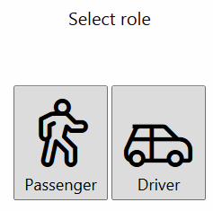

First, you should create an account. Please, use your personal e-mail, not your work mail. There will be a unique code sent to this e-mail, which is required for account confirmation.
Click "Continue" and then check your mailbox.
Copy the code from the letter and insert it into the "Password" field, then click "Continue".
Fill in the information in your profile. You can use your native language.

Choose the role: 'Driver' or ' Passenger '. Later you can change it in your profile settings.
During the first run, the application will search for your geographical location. You can use your mouse to scroll the map.
By using the top panel choose your current position on the map.
By using top panel pick your home on the map.
On the top panel select the " Organizations" menu then click "Join organization". In the field "Your work e-mail" input your organization`s e-mail, then click "Send a Key". There will be a code send to this e-mail. Note, that this e-mail won’t be stored and will be only used once to confirm that you are an employee of the organization.
If you can’t find your organization, please, @Html.ActionLink("register it", "RegisterOrganization")
By click choose your offiсе. In case you can`t find your office on the map @Html.ActionLink("create it", "CreateOffice")
If you think that there is a mistake in the name or the address of the office, create a complaint by clicking "Wrong office!" (right button of mouse). The created office will be removed in case 2\3 of the office users vote to remove it.
Check your profile information in the "Profile" menu. Select your preferred payment policy. Switch the role if you want.
Check your weekly schedule in the "Schedule" menu. Application will find the potential companions related to your schedule.
You can hide/show your profile in "Visibility" menu
For drivers. Enable the "route editing" mode in the top menu by clicking on "edit the route" button. Select your preferred route by double clicking and putting the route points on the map. How many points should you put? As many as necessary for your potential companions to understand your route in details. Points will be saved automatically.
You can put more information about your car in the "Car & Trips" menu.
You can find passengers by using the top menu. Select the way "to home" or "to work". Drivers will be able to see home addresses of the passengers only. Passengers will be able to see both, the routes of the drivers and theirs own route home.
You can ask a driver to give you a ride home or to work by clicking the right button.
Both, driver and walker will see a target point on the map. You can find "departure time" in the points’ tooltip.
In "Trips" or "Car & Trips" (for drivers) menu you can also find details about the future trip, confirm/reject a trip and check departure time.